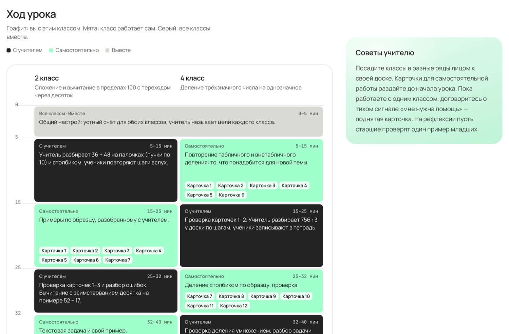
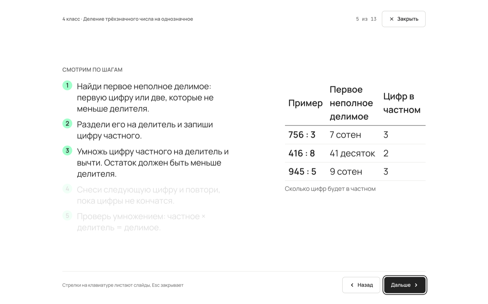
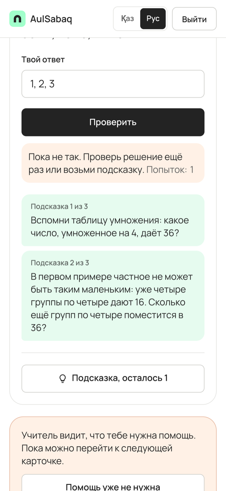
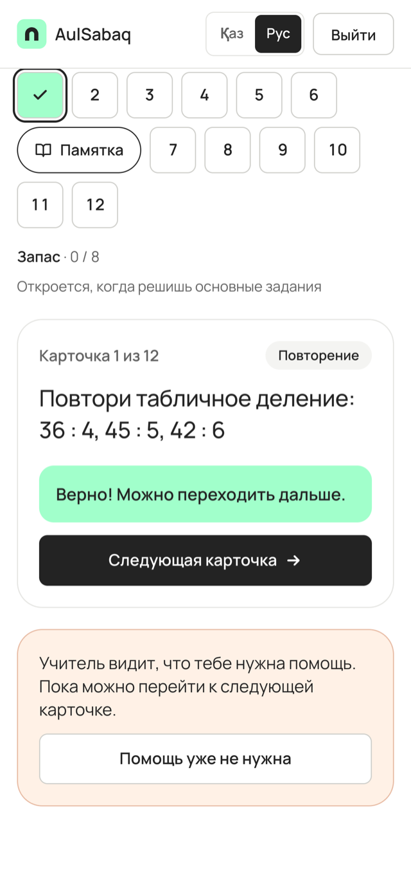
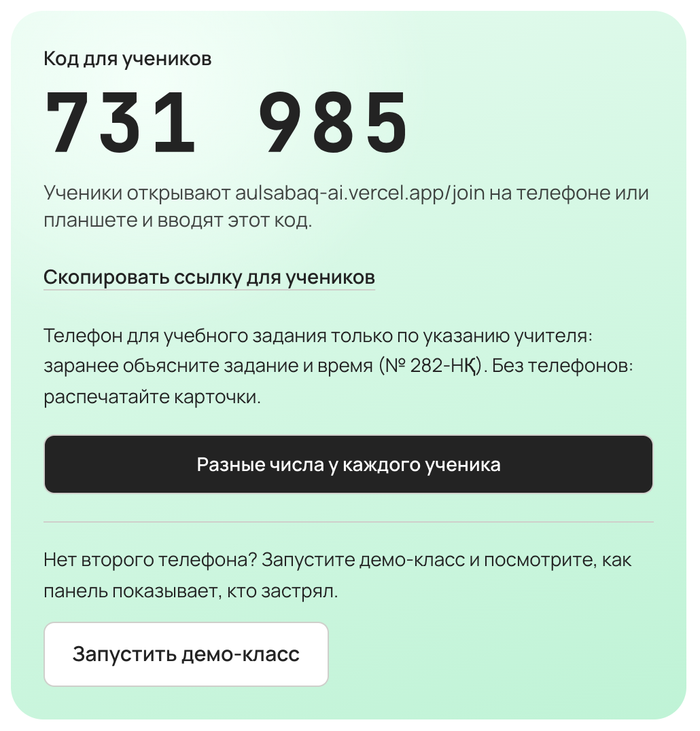
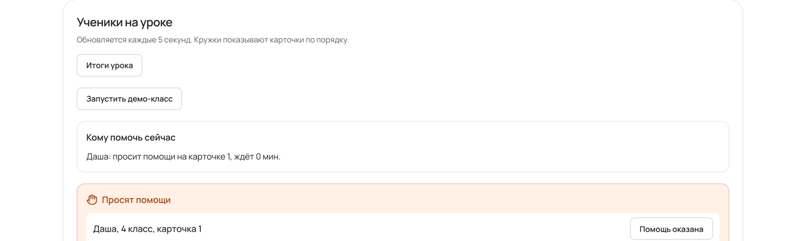
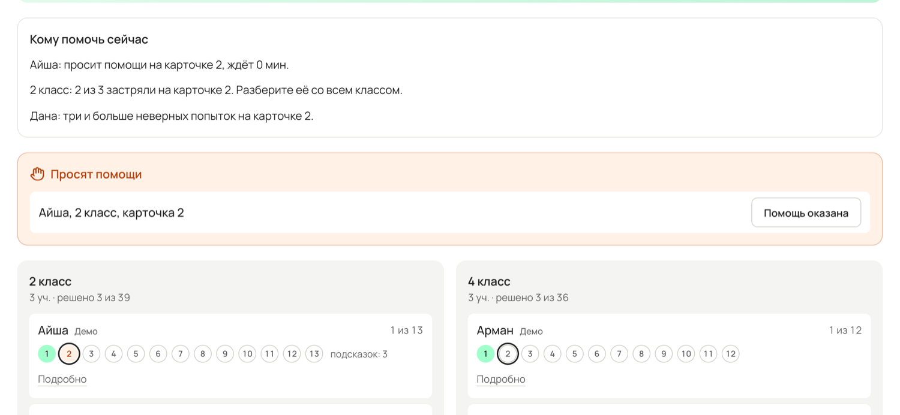
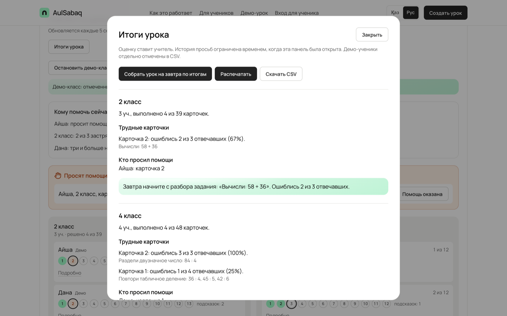

Паспорт проекта и инструкция для проверки
Совмещённый урок за пять минут для учителя малокомплектной школы, который ведёт урок сразу для нескольких классов. Все ученики и данные в демо вымышленные.
Что нужно для проверки
- Только браузер на компьютере или телефоне. Регистрация, оплата и личные данные не нужны.
- Демо-урок открывается без вызова ИИ, поэтому работает всегда.
- Проверка занимает 5 минут. Второй телефон не нужен: хватит второй вкладки.
Состав итогового пакета
- Сайт: https://aulsabaq-ai.vercel.app
- Презентация: два слайда, AulSabaq-AI.pdf
- Видео: 60 секунд, кадры с рабочего сайта
- Инструкция: этот документ, паспорт и ответы на пять вопросов
- Код (по желанию): github.com/asanchoo/aulsabaq-ai
Паспорт проекта
| Название и автор | AulSabaq AI («аул» и «сабақ», по-казахски «урок»). Автор: Асанали Аскаров, Tech Orda, Data Science Academy. |
|---|---|
| Направление | Школа. |
| Проблема и пользователь | Учитель малокомплектной сельской школы ведёт урок сразу для двух, трёх или четырёх классов. Пока он объясняет одному классу, остальные должны работать сами, и к каждому уроку ему нужны поминутный план и задания своего уровня для каждого класса. В Казахстане таких школ 2 654, это 51% сельских школ. |
| Основной сценарий | Учитель вводит предмет, классы и темы → код считает расписание на 45 минут, ИИ пишет объяснения со слайдами и карточки, код проверяет урок по девяти правилам → ученики входят по коду с телефона, решают карточки, получают подсказки без готового ответа и могут позвать учителя → учитель видит на панели, кто застрял, и в конце получает итоги урока. |
| Форма продукта | Сайт для компьютера и телефона, казахский и русский язык, классы с 1 по 11. Для класса без телефонов карточки и маршрутный лист печатаются на A4. |
| AI-инструменты и вклад | В продукте: OpenAI API пишет содержание урока и вторую подсказку ученику, ответ строго по JSON-схеме. Расписание, проверку урока, проверку ответов учеников и панель учителя делает код без ИИ. В разработке: итоговый продукт дорабатывал Codex в ChatGPT Edu (24–25 ноября): 20 из 26 слитых PR, около 9 000 строк кода, 93% нового кода после MVP. В Codex сделаны «Кому помочь сейчас», демо-класс и итоги урока из шагов 6–7, а также пульт, свои числа у каждого ученика, цели программы и маршрутный лист. Основу MVP (12–24 ноября) писал Claude Code. Автор: выбор проблемы, требования, дизайн, решения по архитектуре и приёмка каждой правки. Готовое: Next.js, React, Tailwind CSS, Zod, Vitest (MIT). Создан с нуля в ноябре 2026. |
| Среда и зависимости | Проверяющему нужен только браузер. Сайт на Vercel, база Supabase (Франкфурт), ключ модели только на сервере; всё оплачивает автор, около 9–17 центов за урок. Для проверяющего 0 ₸. |
| Данные и ограничения | Об ученике хранится только имя или номер в списке, без почты, телефона и пароля; в модель имя не уходит. Не сделано: аккаунт учителя (урок привязан к браузеру), офлайн-режим, оценки. Имитация: демо-класс из шести вымышленных учеников с пометкой «Демо», потому что один проверяющий не может быть целым классом. ИИ иногда ошибается в формулировках, особенно в казахской грамматике, поэтому учитель просматривает урок перед уроком. |
1. Какую проблему решает проект?
Каждая вторая сельская школа Казахстана малокомплектная: в одном кабинете сидят, например, 2 и 4 класс, и урок у них общий. Учитель должен расписать 45 минут так, чтобы в каждую минуту он был только с одним классом, а остальные в это время решали задания своего уровня и не ждали. На такой план и карточки к каждому уроку уходит много времени, а без них самостоятельная работа превращается в ожидание.
AulSabaq AI собирает совмещённый урок за 2–3 минуты: поминутный план для всех классов, объяснение новой темы со слайдами для каждого класса и карточки на всё время без учителя. Во время урока ученики решают карточки с телефона, ИИ подсказывает, но не называет ответ, а учитель видит, кто застрял и на какой карточке. Генераторов обычных уроков много; формата совмещённого урока для нескольких классов среди них нет.
2. Как пользоваться проектом?
Удобнее с компьютера. Ученика можно открыть на телефоне или во второй вкладке того же браузера.
- Откройте https://aulsabaq-ai.vercel.app и нажмите «Открыть демо-урок». Это готовый урок математики для 2 класса (сложение в пределах 100) и 4 класса (деление трёхзначного числа на однозначное). Посмотрите «Ход урока»: графит значит «учитель с этим классом», мята значит «класс работает сам».
- В блоке «Объяснение новой темы» нажмите «Показать на экране» у 4 класса и листайте кнопкой «Дальше» или стрелкой на клавиатуре. Esc закрывает слайды.
- Нажмите «Получить код для учеников». Откроется ваша копия урока с шестизначным кодом.
- Во второй вкладке или на телефоне откройте aulsabaq-ai.vercel.app/join, введите код, нажмите «Дальше», выберите «4 класс», впишите имя «Даша» и нажмите «Начать».
- В карточке 1 введите неверный ответ 1, 2, 3 и нажмите «Проверить». Затем два раза «Подсказка» и «Мне нужна помощь учителя».
- Вернитесь на вкладку урока и прокрутите к блоку «Ученики на уроке». Нажмите «Помощь оказана».
- Нажмите «Запустить демо-класс», подождите 30 секунд и откройте «Итоги урока».








3. Как тестировать проект?
- Тестовое задание
- За 5 минут проверить три вещи: урок для двух классов разведён по минутам, ученик получает подсказки без готового ответа, учитель видит, кто застрял.
- Исходные данные
- Демо-урок «Математика, 2 и 4 класс, 45 минут» (кнопка «Открыть демо-урок»). Ученик «Даша», 4 класс. Неверный ответ 1, 2, 3.
- Действия
- Шаги 1–7 из ответа на вопрос 2.
- Ожидаемый результат
- Признаки правильной работы по шагам:
- Шаг 1В каждую минуту учитель не больше чем с одним классом: напротив графитового блока одного класса у другого мятный. Первые 5 минут общий серый этап «Вместе». У мятных блоков номера карточек.
- Шаг 213 слайдов, счётчик вверху «5 из 13». На слайдах с примером деление уголком достраивается вместе с шагами, ответ появляется в конце.
- Шаг 3Код из 6 цифр и кнопки «Начать урок», «Пульт урока», «Редактировать». У каждого проверяющего своя копия, чужих учеников вы не увидите.
- Шаг 4Экран ученика «Даша · 4 класс», «Карточка 1 из 12», номера карточек 1–12 и «Памятка» перед карточкой 7.
- Шаг 5«Пока не так. Проверь решение ещё раз или возьми подсказку. Попыток: 1». «Подсказка 1 из 3» из урока, «Подсказка 2 из 3» от ИИ разбирает ваш ответ, но правильных чисел не называет. После просьбы о помощи: «Учитель видит, что тебе нужна помощь».
- Шаг 6Не позже чем через 5 секунд: «Даша: просит помощи на карточке 1», строка «Даша, 4 класс, карточка 1», у Даши «подсказок: 2», в блоке «Где было трудно» карточка 1. После «Помощь оказана» строка исчезает, у ученика сообщение пропадает в течение 10 секунд.
- Шаг 7Через 20–30 секунд появляются вымышленные ученики с пометкой «Демо» и подсказки учителю, например «2 класс: 2 из 3 застряли на карточке 2. Разберите её со всем классом». В «Итогах урока» по каждому классу трудные карточки с долей ошибок и совет, с какого задания начать завтра.
Дополнительно. Введите в карточке 1 правильный ответ к своим числам (у каждого ученика числа могут отличаться; для 36 : 4, 45 : 5, 42 : 6 это 9, 9, 7): «Верно! Можно переходить дальше». Чтобы проверить сборку нового урока с ИИ: «Создать урок» → Математика → 2 класс и 4 класс со своими темами → «Собрать урок». Ход сборки виден на экране, урок готов за 1,5–3 минуты.
Самопроверка 26 ноября 2026 на рабочем сайте, свежая копия демо, компьютер (1440 px) и телефон (390 px): шаги 1–7 пройдены в браузере Chrome, результаты совпали с ожидаемыми. Скриншоты в этом документе сняты в этот прогон.
Если что-то пошло не так
| «Урок с таким кодом не найден» | Проверьте 6 цифр кода на странице вашей копии урока. |
| Вторая подсказка общая, «Перечитай задание…» | ИИ был недоступен, сработала запасная подсказка: ученик не остаётся без помощи. |
| «ИИ сейчас перегружен» или «Общий дневной предел исчерпан» при создании урока | Подождите минуту или проверьте по демо-уроку: он не вызывает ИИ и открывается всегда. |
4. Какова практическая польза проекта?
Что измерено на рабочем продукте:
Код гарантирует то, что одним промптом не получается: в каждую минуту учитель только с одним классом, карточек хватает на всё время без учителя, подсказка не содержит ответа (сервер проверяет каждую подсказку ИИ и отбрасывает ту, где ответ есть). Во время урока продукт делает то, чего не делает текстовый ответ чата: вход учеников по коду, проверку ответов, просьбы о помощи и панель «кто застрял».
Чего ещё нет. Настоящий урок с учителем малокомплектной школы пока не проведён, поэтому время подготовки «было и стало» никто не измерял. Это первая задача пилота: секундомер у 1–2 учителей на их настоящем уроке.
5. Как использовать или адаптировать проект в другой организации?
Любая малокомплектная школа начинает сразу: открыть сайт, ввести свои классы и темы, без установки, аккаунтов и оплаты. Подходит любой предмет и классы с 1 по 11; в одном уроке от одного до четырёх классов, в одном кабинете или в соседних; у каждого класса свой язык обучения, казахский или русский. Код подбирает цели обучения из типовой программы (приказ № 399, 128 программ), так что урок привязан к официальной программе Казахстана. Школа без телефонов печатает карточки и маршрутный лист на A4.
Так же можно работать везде, где один педагог одновременно ведёт группы разного уровня: кружки, школы с дефицитом учителей, классы-комплекты в соседних странах. Для запуска у себя исходный код открыт на GitHub, нужны Node.js, ключ OpenAI или Gemini и база Supabase. Ограничение: ИИ может ошибиться в содержании, поэтому учитель просматривает урок перед уроком и может исправить любой текст кнопкой «Редактировать».